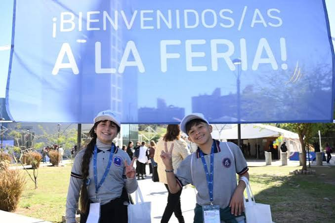

Virginia Audenino | 3.º año — Orientación Informática
01 / LA EXPERIENCIA
Un día diferente

Un recuerdo de nuestra visita a la feria.
Fuimos a la Feria de Ciencias con nuestra profesora de Programación, Jorgelina Sapp, junto con estudiantes de otros cursos. Había muchos stands de diferentes temas, como química, robótica, ciencia y tecnología.
Además de recorrer los stands y conocer los proyectos, había varias actividades para hacer. Fue una salida distinta, porque pudimos aprender cosas nuevas, participar y disfrutar de todo lo que habían preparado.
Durante la visita también recibimos una gorra, una merienda y un vaso de recuerdo.
02 / PARA ENTENDER
¿Qué es una Feria de Ciencias?
Una Feria de Ciencias es un encuentro en el que estudiantes, docentes y otras instituciones presentan proyectos e ideas sobre diferentes temas. En los stands explican cómo hicieron sus trabajos, qué investigaron y qué aprendieron.
No se trata solamente de hacer experimentos. También puede haber proyectos de programación, robótica, matemática, ambiente, tecnología y muchas otras áreas.
En Córdoba, estas ferias pueden tener distintas instancias, como la escolar, la regional y la provincial. Algunos proyectos también pueden llegar a una instancia nacional. Las fechas dependen del calendario de cada año.
La idea es aprender, investigar, compartir conocimientos y mostrar cómo se pueden llevar las ideas a la práctica.
03 / PARA HACER Y DISFRUTAR
Había mucho más que stands
Una de las cosas que más me gustó fue que no solamente se podía mirar y escuchar explicaciones. También había distintas actividades para participar y pasar un buen rato.
01
Cabina de fotos
Había una cabina donde podíamos sacarnos fotos y llevarnos un recuerdo de la visita.
02
Dibujar y pintar
También había un espacio para dibujar y pintar. Estaba bueno tener actividades creativas además de recorrer los proyectos.
03
Un espacio para los más chicos
Había una zona de juegos para niños, dentro de una carpa que parecía un castillo. Era un lugar preparado para que los más chicos pudieran jugar y divertirse.
04
Recorrer y descubrir
Podíamos pasear por la feria, acercarnos a los distintos stands, hacer preguntas y disfrutar de las actividades que ofrecía cada uno.
04 / CIENCIA Y TECNOLOGÍA
Química y robótica
01
El stand de química
En el stand de química nos explicaron cómo hacer slime y pudimos conocer un poco más sobre los materiales que se utilizan para prepararlo. Fue una actividad entretenida porque no solamente escuchamos la explicación, sino que también pudimos participar.
En este espacio también conocimos productos y materiales relacionados con la universidad que participaba en la actividad.
02
El stand de robótica
El stand de robótica me llamó la atención porque se relaciona con la tecnología y la programación. La robótica permite construir y programar dispositivos para que realicen distintas tareas.
Como estudio la orientación Informática, me pareció interesante ver cómo algunos conocimientos tecnológicos pueden aplicarse en proyectos reales.
05 / MI REFLEXIÓN
¿Qué me pareció la experiencia?
En general, me gustó mucho la visita porque había diferentes cosas para hacer y no era solamente caminar mirando stands. Pudimos participar en actividades, sacarnos fotos, dibujar, pintar y conocer proyectos muy variados.
Me gustó que cada espacio tuviera algo diferente para mostrar. También estuvo bueno conocer propuestas de química y robótica y aprender de una forma más práctica, fuera del aula.
Creo que estas experiencias sirven para aprender cosas nuevas, compartir con los compañeros y descubrir temas que quizás después nos interesen para seguir estudiando.
PARA SABER MÁS
Información sobre las ferias
Si querés conocer más sobre la organización de las ferias, podés consultar estas páginas: